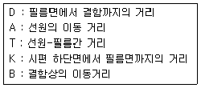
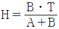
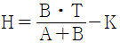
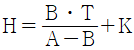
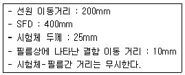
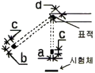
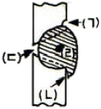
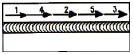

방사선비파괴검사기사(구) (2007-09-02 기출문제)
1과목: 방사선투과시험원리
1. γ선원으로 철판 시험체를 촬영할 때 선원의 종류에 따라 적용 가능한 시험체의 두께범위로 틀린 것은?
- Ir-192 : 7.6cm(3인치)이하
- Co-60 : 22.9cm(9인치)이하
- Cs-137 : 9cm(3.5인치)이하
- Tm-170 : 25cm(10인치)이하
(정답률: 알수없음)

2. 방사선투과시험의 장, 단점에 대한 설명 중 틀린 것은?
- 방사선투과시험은 마이크로 기공 또는 마이크로 터짐의 결함 검출능력이 좋다.
- 주변 재질과 비교하여 1% 이상 방사선의 흡수차를 나타내는 결함을 검출할 수 있다.
- 검사결과를 반영구적으로 기록 및 보관할 수 있다.
- 모든 재질에 적용할 수 있으며, 특히 내부 결함의 검출이 용이하다.
(정답률: 알수없음)
3. X선의 관전압이 100kV 일 때 최소 파장은 약 얼마인가?
- 0.04Å
- 0.12Å
- 0.51Å
- 0.72Å
(정답률: 알수없음)
4. 방서성동위원소인 Ir-192 100Ci가 30일이 경과한 후에는 약 몇 Ci가 되는가? (단, Ir-192의 반감기는 75일로 한다.)
- 68.9Ci
- 75.8Ci
- 83.8Ci
- 131.9Ci
(정답률: 알수없음)
5. 공업용 X선 발생장치의 표적 물질로 가장 많이 사용되는 것은?
- 구리
- 탄소
- 납
- 텅스텐
(정답률: 알수없음)
6. 방사성 동위원소가 붕괴할 때 핵으로부터 나오는 방사선이 아닌 것은?
- α입자
- β입자
- X선
- γ선
(정답률: 알수없음)
7. 맞대기 용접부를 방사선 투과사진 촬영시 선형투과도계를 놓는 방법이 바르게 설명된 것은?
- 필름에 밀착시킨다.
- 가는 선이 시험체의 중앙을 향하도록 한다.
- 별도의 규정이 없으면 선원쪽 시험체 표면에 놓는다.
- 방사선빔의 방향과 가능한 한 평행이 되도록 놓는다.
(정답률: 알수없음)
8. 다음 중 연속에너지 스펙트럼을 나타내는 방사선은?
- 특성 X선
- α선
- 제동 X선
- γ선
(정답률: 알수없음)
9. 방사선 투과사진의 질을 결정하는 요인은 콘트라스트와 명료도로 대별된다. 다음 중 콘트라스트에 영향을 주는 요인이 아닌 것은?
- 검사체의 두께차
- 방사선의 선질
- 사진농도
- 선원의 형상
(정답률: 알수없음)
10. 방사선의 에너지가 증가되면 피사체 콘트라스트(Subject Contrast)는 어떻게 되는가?
- 감소한다.
- 동일하다.
- 증가한다.
- 에너지의 곱에 비례한다.
(정답률: 알수없음)
11. 철강재의 용접으로 발생되는 냉간균열을 찾아내기 위한 적절한 비파괴시험의 시기는?
- 용접 후 즉시
- 용접 후 약 3시간 후
- 용접 후 약 6시간 후
- 용접 후 약 24시간 후
(정답률: 알수없음)
12. 두께 차가 있는 주조품의 방사선투과시험에서 양질의 사진을 얻기 위한 방법으로 틀린 것은?
- 차폐 재료의 이용
- 필름 중첩법의 사용
- 연 X선의 이용
- 적절한 조사 방향의 선정
(정답률: 알수없음)
13. 필름의 농도가 3.0이면 이 필름을 입사한 광은 투과한 광의 밝기의 몇 배가 되겠는가?
- 3배
- 30배
- 100배
- 1000배
(정답률: 알수없음)
14. 방사선투과시험의 필름 콘트라스트에 대한 설명으로 옳은 것은?
- 저농도 필름일수록 크다.
- 감마치가 높을수록 좋다.
- 감마치와 무관하게 일정하다.
- 피사체 콘트라스트가 클수록 트다.
(정답률: 알수없음)
15. 다음 중 방서사선 투과사진의 상질 구비조건이 아닌 것은?
- 필름 콘트라스트
- 투과사진의 농도 범위
- 투과도계 식별 최소 선경
- 계조계의 값 또는 식별 최소 선경
(정답률: 알수없음)
16. 다중필름 기법을 적용하기 위해 속도가 다른 2가지 필름을 선택하고자 할 때 특성곡선상에서 다음 어떤 조건을 만족하여야 하는가?
- 농도(density) 축에서 약간 겹쳐(overlap)야 한다.
- 농도(density) 축에서 겹쳐서는 안된다.
- 로그 상대노출(log E) 축에서 약간 겹쳐(overlap)야 한다.
- 로그 상대노출(log E) 축에서 겹쳐서는 안된다.
(정답률: 알수없음)
17. 자로(磁路)의 길이가 40cm인 중심도체에 200회 코일을 감고 전류는 7A를 흐르게 했다. 이 때의 자화력[A/m]은 얼마인가?
- 700
- 1400
- 1750
- 3500
(정답률: 알수없음)
18. 방사선 투과사진의 촬영에서 계조계의 값을 더 놓일 수 있는 방법으로 옳은 것은?
- 노출시간을 늘린다.
- 관전류를 높인다.
- 사진농도를 낮춘다.
- 관전압을 낮춘다.
(정답률: 알수없음)
19. X선 발생장치의 취급에 대한 주의사항으로 틀린 것은?
- X선 발생장치의 확인은 복수의 방법으로 행한다.
- X선 발생기의 제어기는 주기적으로 커버를 열고 내부를 청소한다.
- X선 발생를 사용 중에는 필름 배지를 휴대해야 한다.
- 인터록, 도어 스위치 등의 외부 안전회로와 연동하여 사용할 때는 정기적으로 인접회로의 작동을 확인한다.
(정답률: 알수없음)
20. 방사선과 물질과의 상호작용 중에서 광전효과에 의하여 발생하는 X선을 무엇이라 하는가?
- 백색 X선
- 연속 X선
- 형광 X선
- 제동복사선
(정답률: 알수없음)
2과목: 방사선투과검사
21. 방사선투과 상을 기록하는 매체로서 필름 대신 사용하는 IP(imaging Plate)가 있다. IP의 특성을 필름과 비교하여 설명한 것으로 틀린 것은?
- 필름에 비해 감도가 높다.
- 필름에 비해 관용도(latitude)가 넓다.
- 필름에 비해 노출시간의 단축이 가능하다.
- 필름에 비해 약간 더 어두운 암실이 필요하다.
(정답률: 알수없음)
22. 방사선투과사진의 판독에 관한 설명 중 잘못된 것은?
- 투과사진의 농도가 높은 경우 필름판독기는 밝은 것이 좋다.
- 투과사진을 관찰할 경우 직사광선이 드는 장소가 좋다.
- 투과사진의 농도가 높을 경우 장소는 약 300룩스의 실내보다 암실이 좋다.
- 투과사진의 투과도계 식별도는 농도와 관계가 있다.
(정답률: 알수없음)
23. X선관의 펄라멘트는 점화되어 있으나 관전류계 바늘이 움직이지 않는 원인은 다음 중 어느 것인가?
- X선관의 파손
- 양극회로의 접속불량
- 가열용 변압기의 단선
- 필라멘트 회로의 접속불량
(정답률: 알수없음)
24. 제로라디오그래피(Xeroradiography)에 관한 설명으로 틀린 것은?
- 암실 작업이 불필요하다.
- X선 필름에 비해 감도가 매우 좋다.
- 대전량이 방사선의 강도에 따라 변한다.
- 알루미늄판 위에 셀레니움 박막을 입힌 감광판을 사용한다.
(정답률: 알수없음)
25. 두께의 차이가 아주 심하거나 형상이 복잡한 주물 등을 방사선투과검사할 때 종종 사용되고 있는 X선 차폐액의 주성분으로 옳은 것은?
- 물
- 수은
- 글리세린
- 아세트산 연
(정답률: 알수없음)
26. γ선 투과시험장치에 주로 사용하는 방사 선원의 Rhm 값(γ정수)으로 다음 중 옳은 것은?
- Ir-192 : 0.55
- Co-60 : 0.37
- Tm-170 : 1.35
- Cs-137 : 0.003
(정답률: 알수없음)
27. X선 발생장치의 구조 중 주요 구성부가 아닌 것은?
- X선관
- 제어기
- 고전압 발생기
- 선원 안내관
(정답률: 알수없음)
28. 선원의 위치를 바꾸어 촬영하는 방사선투과시험으로 결함의 위치를 측정하는 것이 가능할 때, 다음 조건으로 시험체 저면에서 결함까지의 깊이(H)를 바르게 나타낸 식은?


- H=K-D


(정답률: 알수없음)
29. 유공형 투과도계의 상질수준(quality level) “2-1T"의 설명 중 옳은 것은?
- T는 투과두께이다.
- 감도는 1.4% 정도이다.
- 최소 식벽 구멍은 2T hole이다.
- 투과도계 두께는 투과 두께의 1%정도이다.
(정답률: 알수없음)
30. 주강품에 발생하는 결함 중 주형내에서 용탕의 2개의 흐름이 합류하였으나 그 경계가 완전히 용입되지 못한, 즉 금속학적으로 접합되지 못한 것을 무엇이라 하는가?
- 수축관
- 미스런
- 콜드셧
- 균열
(정답률: 알수없음)
31. 결함의 직경에 따라 방사선투과사진 콘트라스트가 변하여 검고 스므스하며, 둥근 모양의 점으로 나타나는 결함은?
- 가스기공
- 수축관
- 편석
- 코어변이
(정답률: 알수없음)
32. 다음 조건에 따라 파라렉스법(parallax method)에 의한 선원 측에서의 결함의 깊이를 구하면 약 얼마인가?

- 6mm
- 9mm
- 15mm
- 19mm
(정답률: 알수없음)
33. 다음 중 용접부의 개선면과 입사되는 방사선의 각도에 따라 검출율이 크게 변하는 것은 무엇인가?
- 슬래그(slag)
- 언더컷(undercut)
- 융합 불량(lack of fusion)
- 용입 부족(incomplete penetration)
(정답률: 알수없음)
34. 그림과 같은 형태의 표적(진초점)을 가진 X선 발생장치가 있다. 시험체에 적용하는 유효초점(f)의 크기를 나타낸 것은?

- a
- b
- c
- d
(정답률: 알수없음)
35. 방사선 투과사진의 필름 선정과 가장 관계가 먼 것은?
- 현상액의 온도
- 사용되는 방사선의 종류
- 시험할 검사체의 조성, 형상 및 크기
- 단순한 검사인지 특별히 중요한 부위의 검사인지 여부
(정답률: 알수없음)
36. 다음 중 X선의 관전압을 낮추면 어떻게 되는가?
- 파장이 짧고 투과력이 강한 X선을 발생한다.
- 파장이 길고 투과력이 강한 X선을 발생한다.
- 파장이 길고 투과력이 약한 X선을 발생한다.
- 파장이 짧고 투과력이 약한 X선을 발생한다.
(정답률: 알수없음)
37. 다음 중 주강품에서 발견할 수 없는 결함은?
- 균열
- 라미네이션
- 기공
- 모래 개재물
(정답률: 알수없음)
38. 방사선 작업종사자에 대한 허용 피폭 선량을 년간 50mSv으로 규정하고 1년을 50주로 간주할 때 Ir-192 20Ci로 10m 거리에서 작업하는 경우 주당 작업할 수 있는 시간은 얼마인가? (단, Ir-192dml Rhm 값은 0.50R/h이다.)
- 0.75h/주
- 1.00h/주
- 1.25h/주
- 1.50h/주
(정답률: 알수없음)
39. 방사선투과검사시 비방사능이 큰 동위원소를 사용할 때 가장 큰 장점은 무엇인가?
- 선원의 크기가 작아지므로 기하학적 불선명도가 작아진다.
- 방출하는 방사선의 흡수가 작아지므로 산란선이 줄어든다.
- 선원의 강도가 강해지므로 노출시간을 줄일 수 있다.
- 반감기가 길어지므로 선원을 보다 효과적으로 오래 사용할 수 있다.
(정답률: 알수없음)
40. 초음파탐상검사와 비교하여 방사선투과검사가 보다 효과적인 경우로 옳은 것은?
- 재질경계 부위와 같은 재질변화를 검출하고자 하는 경우
- 피로균열과 같은 미세한 표면결함을 검출하고자 하는 경우
- 면상 결함이 아닌 내부결함을 검출하고자 하는 경우
- 라미네이션과 같은 면상 결함을 검출하고자 하는 경우
(정답률: 알수없음)
3과목: 방사선안전관리,관련규격및컴퓨터활용
41. 알루미늄 평판 접합 용접부의 방사선투과 시험방법(KS D 0242)에서 A급 상질일 경우 사진농도 범위로 옳은 것은?
- 1.0이상 3.5이하
- 1.0이상 4.0이하
- 1.3이상 3.5이하
- 2.0이상 4.0이하
(정답률: 알수없음)
42. 강용접 이음부의 방사선투과 시험방법(KS D 0845)에 따라 T 이음부의 실제 두께측정이 불가능한 경우 방사선 조사방향을 정하는 방법으로 옳은 것은?
- 1방향에서 촬영할 경우 30° 기울어진 방향으로 조사한다.
- 1방향에서 촬영할 경우 45° 기울어진 방향으로 조사한다.
- 2방향에서 촬영할 경우 45° 기울어진 방향으로 조사한다.
- 조사방향은 어느 방향이든지 무관하게 투과두께가 최대가 되도록 한다.
(정답률: 알수없음)
43. 원자력법 시행령에서 규정하는 방사선 종사자에 대한 유효선량한도는 얼마인가?
- 연간 30mSv를 넘지 않는 범위에서 5년간 100mSv
- 연간 30mSv를 넘지 않는 범위에서 5년간 150mSv
- 연간 50mSv를 넘지 않는 범위에서 5년간 100mSv
- 연간 50mSv를 넘지 않는 범위에서 5년간 250mSv
(정답률: 알수없음)
44. 필름배지와 비교한 열형광선량계(TLD)에 대한 설명으로 틀린 것은?
- 판독시간이 짧다.
- 열, 빛과 습도의 영향이 적다.
- 소자의 재사용이 가능하다.
- 가열하여 판독한 후에도 방사선에 대한 정보가 계속 유지 관리된다.
(정답률: 알수없음)
45. 개인피폭 선량계 중 필름배지의 사용에 있어서 문제가 되는 잠상퇴행의 주 원인이 되는 요소는?
- 방사선의 종류
- 대기 중의 습도
- 방사선 흡수량
- 필름과 필터의 두께
(정답률: 알수없음)
46. “방사선 방호 등에 관한 기준”에 의거한 방사선 사고피해의 확대를 방지하기 위하여 불가피한 작업에 참여하는 자의 허용 유효선량 한계는?
- 0.02시버트
- 0.1시버트
- 0.2시버트
- 0.5시버트
(정답률: 알수없음)
47. “방사선안전관리 등의 기술기준에 관한 규칙”에서 정의되는 방사선관리구역을 정한 내용으로 틀린 것은?
- 외부방사선량율 : 1주당 400μSv
- 공기 중의 방사성 물질의 농도 : 유도공기 중 농도
- 물체 표면의 오염도 : 허용표면오염도
- 물체 표면의 외부방사선량율 : 1주당 200μSv
(정답률: 알수없음)
48. 강용접 이음부의 방사선투과 시험방법(KS D 0845)에 따라 갈판 맞대기 용접부에 대한 검사를 실시할 때 B급의 상질을 요구하는 경우 투과사진의 농도범위로 옳은 것은?
- 1.3이상 4.0이하
- 1.5이상 3.8이하
- 1.8이상 4.0이하
- 2.0이상 3.8이하
(정답률: 알수없음)
49. 강용접 이음부의 방사선투과 시험방법(KS D 0845)에서 모재 두께 25mm, 투과 두께가 30mm인 경우 제1종 결함에 대한 시험 시야로 옳은 것은?
- 10×10mm
- 15×15mm
- 10×20mm
- 10×30mm
(정답률: 알수없음)
50. 보일러 및 압력용기에 대한 표준 방사선투과검사(ASME Sec.V Art.22 SE 94)에 따라 Co-60의 방사성 동위원소를 사용하여 촬영할 때 최소한 두께가 얼마 이상인 연받증감지를 사용하여야 하는가?
- 0.⑤mm(0.002인치)
- 0.13mm(0.0⑤인치)
- 0.25mm(0.01인치)
- 0.5mm(0.02인치)
(정답률: 알수없음)
51. 강용접 이음부의 방사선투과 시험방법(KS D 0845)에서 분류한 2종 결함에 포함되지 않는 것은?
- 융랍불량
- 용입불량
- 텅스텐 혼입
- 슬래그 혼입
(정답률: 알수없음)
52. 보일러 및 압력용기에 대한 방사선투과검사(ASME Sec.V Art.2)에서 모재 두께가 12mm, 덧살 높이가 2mm, 두께 5mm의 보강판이 사용되었을 때 투과도계 선정을 위한 투과 두께는 얼마인가?
- 12mm
- 14mm
- 17mm
- 19mm
(정답률: 알수없음)
53. Co-60에서 방출하는 방사선량율을 허용 준위로 감쇠하는데, 밀도 11.3g/cm3인 납판을 5cm 두께가 필요하다면 밀도가 2.35g/cm3인 콘크리트는 두께가 약 몇 cm가 필요하겠는가?
- 4.8cm
- 12cm
- 24cm
- 48cm
(정답률: 알수없음)
54. 보일러 및 압력용기에 대한 방사선투과검사(ASME Sec.V Art.2)에 따른 내용을 기술한 것이다. 다음 중 틀린 것은?
- 후방산란선 유무를 확인하기 위한 납글자 "B"의 최소크기는 높이 1/2인치, 두께 1/16인치 이다.
- 농도계의 교정은 스텝웨지 필름을 사용하여 최소한 6개월마다 수행한다.
- 접근이 불가능하여 투과도계를 선원쪽에 놓을 수 없는 경우에는 필름 쪽에 놓고, 납글자 “F"를 투과도계에 근접시켜 놓아야 한다.
- 투과사진의 어두운 배경위에 후방산란 확인용 “B"의 밝은 상이 나타나면 그 투과사진은 불합격이다.
(정답률: 알수없음)
55. 보일러 및 압력용기에 대한 방사선투과검사(ASME Sec.V Art.2)에서 투과사진 상에 놓도 변화가 어느 범위 이상이면 추가로 상질계를 배치하고 재촬영하여야 하는가?
- 지정된 농도보다 -15% 또는 30% 이상으로 변화한 경우
- 지정된 농도보다 -10% 또는 30% 이상으로 변화한 경우
- 지정된 농도보다 -15% 또는 35% 이상으로 변화한 경우
- 지정된 농도보다 -10% 또는 35% 이상으로 변화한 경우
(정답률: 알수없음)
56. 컴퓨터 보조기억 장치에 해당하지 않는 것은?
- USB Memory
- Floppy Disk
- DVD
- Scanner
(정답률: 알수없음)
57. 클라이언트가 접속하려는 웹서버에 직접 데이터를 가져오지 않고 저장된 데이터를 가져옴으로써 속도가 빠르고 전체 네트워크 부하를 줄일 수 있는 역할을 하는 것은?
- 프록시(Proxy)
- 도메인(Domain)
- 방화벽(Firewall)
- 웹서버(Web server)
(정답률: 알수없음)
58. 컴퓨터에서 타이머에 의한 인터럽트 방식은?
- 외부 인터럽트
- 관리자 호출 인터럽트
- 기계검사 인터럽트
- 프로그램 검사 인터럽트
(정답률: 알수없음)
59. 다음 중 공통 주제에 대하여 정보다 견해를 나눌 수 있는 인터넷 서비스로 다양한 그룹으로 분리되어 새로운 정보를 실시간에 얻을 수 있는 것은?
- 채팅
- 뉴스그룹
- 웹메일
- 텔넷
(정답률: 알수없음)
60. 인터넷상에서 전화를 걸 수 있는 기술을 무엇이라고 하는가?
- VoIP
- VOD
- AOD
- ADSL
(정답률: 알수없음)
4과목: 금속재료학
61. 전처리 효과에 의하여 재료의 내ㆍ외부가 다르게 경화되는 현상을 무엇이라 하는가?
- 연화풀림
- 소성변형
- 질량효과
- 가공경화
(정답률: 알수없음)
62. 강의 잔류응력이 가장 심하게 발생되지만 강의 경화가 주 목적인 열처리는?
- Quenching
- Annealing
- Normalizing
- Tempering
(정답률: 알수없음)
63. 강의 변태에서 C.C.T 곡선이란?
- TTT 곡선과 동일하다.
- 연속냉각변태 곡선이다.
- CAC 곡선과 같은 곡선이다.
- 마텐자이트 생성에만 관계되는 곡선이다.
(정답률: 알수없음)
64. 두랄루민(duralumin)의 기본 합금계는?
- Pb-Mn-Si 계
- Al-Cu-Mg 계
- Al-Zn-Ni 계
- Ca-Si-Cu 계
(정답률: 알수없음)
65. 다음 중 금속초미립자의 특성을 설명한 것으로 틀린 것은?
- 표면적이 커서 촉매로 이용된다.
- Cr 계 합금 초미립자는 빛을 잘 흡수한다.
- Fe계 합금 초미립자는 금속덩어리보다 자성이 강하므로 자성재료로 이용된다.
- 저온에서 열저항이 매우 작아서 열의 부도체이다.
(정답률: 알수없음)
66. 순철에는 없고 탄소강(Carbon steel)에 존재하는 변태는?
- A1
- A2
- A3
- A4
(정답률: 알수없음)
67. 다음 중 형상기억합금의 조성 성분으로 옳은 것은?
- Mn-B
- Co-W
- Cr-Co
- Ti-Ni
(정답률: 알수없음)
68. Hadfield 강이라고 하며, 조직은 오스테나이트이고, 가공경화성이 우수한 특수강은?
- Ni-Cr 강
- 고 Mn 강
- Cr 강
- Cr-Mo 강
(정답률: 알수없음)
69. 오스테나이트 상태로부터 Ms 이상인 250~450℃의 염욕으로 담금질 하여 과냉 오스테나이트가 염욕 중에서 항온 변태가 종료 할 때까지 항온을 유지하여 Bainite 조직을 얻기 위한 열처리법은?
- Marquenching
- Martempering
- Austemperimg
- Ausformimg
(정답률: 알수없음)
70. 다음 중 접종(Inoculation)처리에 대한 설명으로 틀린 것은?
- Chill화를 방지한다.
- 흑연의 형상을 개량한다.
- 결정의 핵생성을 저하시킨다.
- 기계적 설질을 향상시킨다.
(정답률: 알수없음)
71. 다음 중 Ti에 대한 설명으로 틀린 것은?
- 불순물에 의한 영향이 크다.
- 300℃ 근방의 온도구역에서 경도저하가 현저하다.
- 면심입방격자이며, 내력/인장강도 의 비가 2에 가깝다.
- 연신재에서는 섬유조직에 따른 이방성을 나타낸다.
(정답률: 알수없음)
72. 황동의 조직에 대한 설명으로 틀린 것은?
- α+β상은 Zn이 38%이상이 될 때 형성된다.
- α상은 Cu에 Zn을 고용한 상이며, 면심입방격자이다.
- γ상은 Cu2Zn3의 조성을 갖는 중간상으로 고아연합금에서는 실용성이 없다.
- β상은 700~800℃에서 β(불규칙격자)⇄β‘(규칙격자)의 비연속적 변화를 일으키며 조밀입방격자를 갖는다.
(정답률: 알수없음)
73. 탄소강에 존재하는 원소 중 Si가 기계적 성질에 미치는 영향으로 틀린 것은?
- 연신율을 증가시킨다.
- 탄성한계를 증가시킨다.
- 충격치를 저하시킨다.
- 입자의 크기를 증대시킨다.
(정답률: 알수없음)
74. 다음 중 정결함이 아닌 것은?
- 전위
- 원자공공
- 격자간 원자
- 치환형 원자
(정답률: 알수없음)
75. 0.5%의 탄소를 포함하는 아공석강을 오스테나이트 영역으로 가열한 다음 상온까지 서냉하였을 때, 관찰되지 않는 조직은 무엇인가?
- 마텐자이트
- 초석 페라이트
- 공석 페라이트
- 시멘타이트
(정답률: 알수없음)
76. 분산강화와 석출경화에 대한 설명으로 틀린 것은?
- 분산강화는 미세하게 분산된 불용성 제 2상에 의해 재료를 강화시키는 방법으로 고온에서도 상당한 강도를 유지할 수 있다.
- 석출경화용 합금은 온도가 올라가면 석출물이 성장하고 기지 내로 재용해되기 때문에 강화 효과가 줄어들어가 없어진다.
- Cu-Be 합금은 분산강화형 합금으로 시효열처리에 의해 석출물이 형성되어 재료의 강도를 증가시킨다.
- 분산강화와 석출경화에서 재료의 강도가 증가하는 이유는 분산상이나 석출상이 전위의 이동을 방해하는 장애물로 작용하기 때문이다.
(정답률: 알수없음)
77. 다음 중 Ni이 첨가된 황동 합금이 아닌 것은?
- 양백
- 양은
- German Silver
- Naveal brass
(정답률: 알수없음)
78. 다음 중 주석의 특성을 설명한 것으로 틀린 것은?
- 상온가공경화가 없으므로 소성가공이 쉽다.
- 비중은 약 100.3이고, 융점은 약 670℃ 정도이다.
- 무독성이므로 의약품, 식품 등의 포장용, 튜브에 사용된다.
- 주석은 백색주석(β-Sn)이 저온에서 변태하여 회색주석(α-Sn)으로 변화한다.
(정답률: 알수없음)
79. 염소(Cl)가 함유된 물을 쓰는 관에 황동울 사용할 경우 흔히 발생하는 탈아연부식의 방지책으로 가장 적합한 것은?
- Zn 도금을 한다.
- As, Sn 등을 첨가한다.
- 잔류응력을 제거한다.
- 도료로 도장한다.
(정답률: 알수없음)
80. 구상흑연과 편상흑연의 중간 형태로 형성된 주철로 강도, 연성, 열전도도 등은 회주철보다 우수하며, 디젤엔진, 실린더 블록 및 헤드, 자동차 브레이크, 유압밸브 등에 사용되는 주철은?
- CV주철
- 가단주철
- 합금주철
- 칠드(chilled)주철
(정답률: 알수없음)
5과목: 용접일반
81. 다음 용접의 종류 중 전기저항용접에 속하지 않는 것은?
- 스포 용접
- 프로젝션 용접
- 심 용접
- 스터드 용접
(정답률: 알수없음)
82. 아크 쏠림(Aec blow)의 방지대책으로 틀린 것은?
- 직류용접을 피하고 교류용접을 사용한다.
- 용접봉을 아크 쏠림의 반대편으로 향하게 한다.
- 긴 용접에서는 후퇴법(Back step)으로 용접한다.
- 접지점은 가능한 한 용접부에 가장 가까이 접지한다.
(정답률: 알수없음)
83. 직류 피복 금속아크 용접에서 용접봉을 음극(-)에, 모재를 양극(+)에 접속한 극성은?
- 음극성
- 정극성
- 역극성
- 쌍극성
(정답률: 알수없음)
84. 정격 2차 전류가 200A, 정격 사용율이 30%인 용접기로 180A의 전류를 사용하여 용접할 경우 허용사용율은 약 몇 %인가?
- 33
- 37
- 53
- 67
(정답률: 알수없음)
85. 용접봉의 피복제에 대한 설명으로 틀린 것은?
- 아크를 안정시킨다.
- 합금 원소를 첨가할 수 있다.
- 슬래그의 유동성을 작게 한다.
- 용착 금속을 보호한다.
(정답률: 알수없음)
86. 불활성 가스 금속용접의 특징 설명으로 틀린 것은?
- 박판용접(1mm 이하)에는 곤란하다.
- 바람의 영향을 받기 쉬우므로 방풍대책이 필요하다.
- 수동 피복아크 용접에 비하여 용착효율이 높아 고능률적이다.
- TIG 용접에 비해 잔류밀도가 낮아 용융속도가 느리므로 후판용접에는 부적합하다.
(정답률: 알수없음)
87. 프로젝션(projection)용접법의 특징 설명으로 틀린 것은?
- 열용량이 많은 재료에 이용된다.
- 전극 수명이 길고 작업능률이 높다.
- 점간거리가 작은 점용접이 가능하다.
- 작업속도가 느리다.
(정답률: 알수없음)
88. 다음 용접종류 중 압점에 속하는 것은?
- TIG 용접
- 테르밋 용접
- 전기저항 용접
- 일렉트로 슬래그 용접
(정답률: 알수없음)
89. 다음 연강용 피복 아크 내균열성이 가장 우수한 용접봉 피복제는?
- 티타니아계
- 저수소계
- 고산화철계
- 고셀룰로스계
(정답률: 알수없음)
90. 그림의 수평자세 V형 흠 이음 용접에서 용입 불량은 어느 부분인가?

- (ㄱ)
- (ㄴ)
- (ㄷ)
- (ㄹ)
(정답률: 알수없음)
91. 용해 아세틸렌 사용상의 주의사항으로 잘못된 것은?
- 용기 사용시나 저장시에는 통풍이 잘되고 직사광선이 쬐이지 않는 장소에 둔다.
- 가스의 사요을 중지할 때는 토치 밸브만 닫지 말고 용기 밸브도 반드시 닫는다.
- 사용 후에는 반드시 용기의 잔압이 남지 않도록 하고 밸브를 안전하게 닫는다.
- 운반시 충격을 주거나 떨어뜨려서는 안된다.
(정답률: 알수없음)
92. 모재를 전혀 녹이지 않고 모재보다 용융점이 낮은 용가재를 녹여 모세관 현상을 이용하여 접합하는 용접법은?
- 융접
- 단접
- 압접
- 납땜
(정답률: 알수없음)
93. 다음의 용접부 검사방법 중 파괴검사에 속하는 것은?
- 현미경 조직 검사
- 방사선 검사
- 와류 검사
- 초음파 검사
(정답률: 알수없음)
94. 다음 중 겹쳐놓은 2개의 용접재 한쪽에 둥근 구멍 대신에 좁고 긴 흠을 만들어 놓고 그 곳을 용접하는 이음의 형태는?
- 슬롯 용접
- 비드 용접
- 플러그 용접
- 플레어 용접
(정답률: 알수없음)
95. 용접변형의 교정방법 중 점가열법을 설명한 것으로 틀린 것은?
- 굽힘 및 말등허리 굽힘 등에 이용한다.
- 판의 굽힘이 생긴 부분의 가열온도는 500~600℃ 정도이다.
- 가열점의 지름은 20~30mm 정도이다.
- 가열시간을 될 수 있는 한 길게 하여 열을 많이 받게 한다.
(정답률: 알수없음)
96. 발전형 직류 아크용접기에 비교한 정류기형 직류 아크용접기 특징 설명으로 틀린 것은?
- 보수 점검이 어렵다.
- 소음이 나지 않는다.
- 취급이 간단하고 가격이 싸다.
- 실리콘 정류기의 경우 150℃에서 폭박할 염려가 있다.
(정답률: 알수없음)
97. 일반적인 강판의 가스용접시 모재 두께 6mm일 때에 사용 용접봉의 지름으로 다음 중 가장 적합한 것은?
- 1mm
- 2mm
- 4mm
- 6mm
(정답률: 알수없음)
98. 원판 전극을 회전시키면서 가압 통전하고 이음부를 따라 연속적으로 너깃(nugget)을 겹치게 용접하는 저항용접의 일종인 것은?
- 심용접
- 스폿용접
- 슬래시용접
- 프로젝션용접
(정답률: 알수없음)
99. 수동용접에서 용접 모재에 흡수되는 열량은 발생된 용접입열량의 얼마 정도(몇 %)가 되는가?
- 25~35
- 45~55
- 60~70
- 75~85
(정답률: 알수없음)
100. 용접에 의한 변형을 적게 하기 위하여 주로 박판용접에 적합한 아래 그림과 같은 용착법은?

- 대칭법
- 전진법
- 후진법
- 스킬법
(정답률: 알수없음)